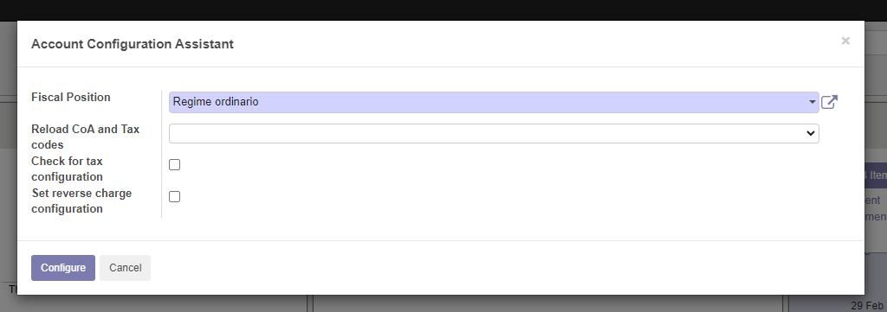

Configure account records

Configura record contabili



This module makes available following useful functions:

Questo modulo rende disponibili le seguenti utili funzioni:
Authors | Autori:
Contributors | Partecipanti:
This module is maintained by the SHS_AV s.r.l..
This module is part of l10n-italy-supplemental project.
Published information on | Informazioni pubblicate: 2024-03-25